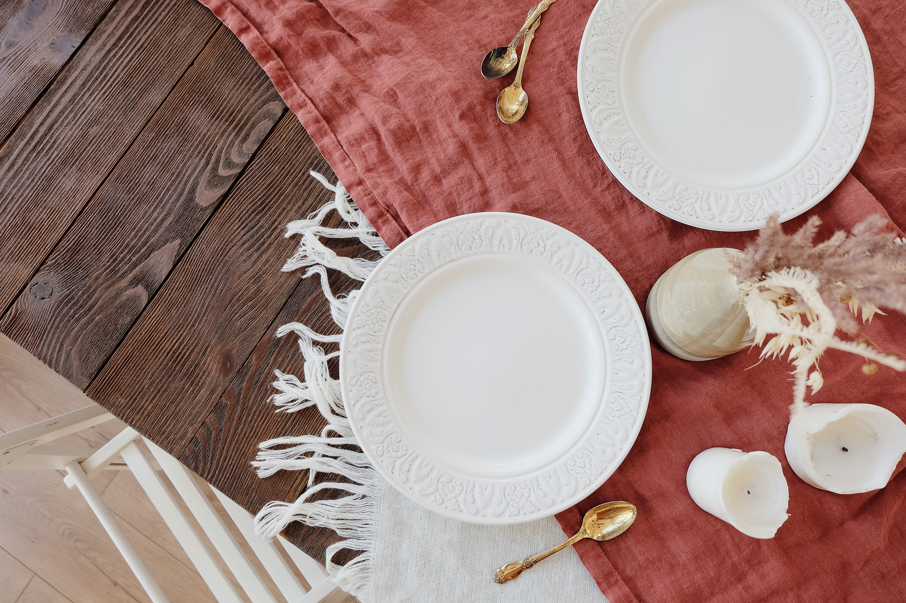

ru0
option 1
option 1
option 1
紅茶
紅茶是經過採摘、萎凋、揉捻、發酵、乾燥等步驟生產出來的；比綠茶多了發酵的過程。
漢堡
以圓形麵包內夾絞肉的食物，通常會有些許的蔬菜，定義上屬於三明治。
炒飯
在炒鍋或煎鍋中炒熟的米飯，通常與雞蛋、蔬菜、海鮮或肉類等其他食材混合。
果汁
由新鮮水果或蔬菜榨成汁的一種飲料。各種不同水果含有不同的維生素等營養，而被視為是健康的飲料。
意式麵食
指所有源自意大利的麵食，特點是有很多種不同的式樣，像長條形、半月形管狀、扭曲狀等。
牛排
隨著使用牛隻部位的變更，延伸出多種不同的種類，是西餐中最常見的食物之一。通常以煎和燒烤為主。
煮飯需要工具
菜刀
菜刀有非常多的種類，除了依據各種目的設計的菜刀之外，也可分為中式菜刀、日式菜刀和洋式菜刀。
調味料
菜刀有非常多的種類，除了依據各種目的設計的菜刀之外，也可分為中式菜刀、日式菜刀和洋式菜刀。
餐具
菜刀有非常多的種類，除了依據各種目的設計的菜刀之外，也可分為中式菜刀、日式菜刀和洋式菜刀。

食物
生物提供營養的物質，來源通常是植物、動物、菌類，包含著維生所需的營養素，如碳水化合物、脂肪、蛋白質、水等，能提供能量，維持生命及刺激成長。
中式
美式
日式
飲料
供人類飲用的液體。除了解渴的基本功能外，飲料在人類文化中也扮演著重要的角色。常見的飲料類型包括咖啡、手搖飲、茶 等，但不包括水。